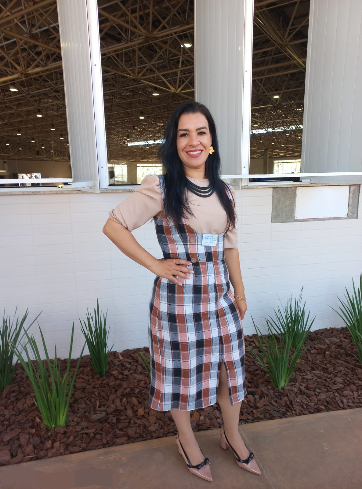

Nutricionista Daniela K. Arantes

Quem é Daniela?
- Formada em nutrição desde 2006.
- Pós-graduada em:
- Nutrição Clínica, Esportiva e Estética
- Prescrição de Fitoterápicos
- Nutrição no Transtorno do Espectro Autista (TEA)
- Sobre Mim:
- Mãe de 3 filhos
- Amo estudar
- Amo musculação
- Sou apaixonada por levar autoestima para as pessoas
- Meu lema: Chegar ao resultado sem dietas radicais e sofrimento.

O Que Você Encontra na Consulta?
Avaliação completa do seu estado nutricional:
- Análise detalhada do seu corpo, hábitos e saúde para traçar o melhor caminho.
Plano alimentar personalizado, adaptado à sua rotina e preferências:
- Dieta feita sob medida para suas necessidades, gostos e estilo de vida.
Suporte no ganho de massa muscular, emagrecimento saudável e melhoria da saúde geral:
- Orientações práticas para transformar seu corpo com equilíbrio e segurança.
Acompanhamento focado em autoestima, sem dietas restritivas ou sofrimentos:
- Melhore sua relação com a alimentação sem sacrifícios exagerados ou sofrimento.
Estratégias práticas para melhorar sua saúde de forma sustentável:
- Técnicas simples e eficazes para criar hábitos saudáveis que duram.
Prescrição de suplementos e fitoterápicos, quando necessário:
- Indicação segura e personalizada de suplementos e ervas para otimizar seus resultados.
Explicação Sobre o Processo
Primeira Consulta:
- Avaliação do histórico de saúde, hábitos alimentares, exames e objetivos pessoais.
Montagem do plano alimentar:
- Criação de um plano totalmente adaptado à sua rotina, preferências e necessidades.
Acompanhamento e ajustes:
- Análise dos resultados e ajustes no plano para garantir evolução sem restrições severas.
Resultados sustentáveis:
- Foco em transformar sua saúde e autoestima de forma definitiva e prazerosa.
Benefícios práticos da sua consulta:
- Mais energia e disposição para o seu dia a dia.
- Emagrecimento saudável e sem efeito sanfona.
- Melhora da autoestima através de metas realistas e alcançáveis.
- Ganho de massa muscular e força de maneira equilibrada.
- Orientação prática para fazer boas escolhas sem sofrimento.
- Melhoria da saúde metabólica, imunológica e emocional.
- Reeducação alimentar para resultados duradouros.
>
Serviços Oferecidos
- Consultas presenciais e online.
- Avaliação nutricional completa e personalizada.
- Elaboração de plano alimentar individualizado.
- Prescrição de suplementos e fitoterápicos quando necessário.
- Estratégias para emagrecimento, hipertrofia e saúde metabólica.
- Acompanhamento nutricional contínuo para ajustes e suporte.
- Orientação nutricional específica para autismo e condições especiais.